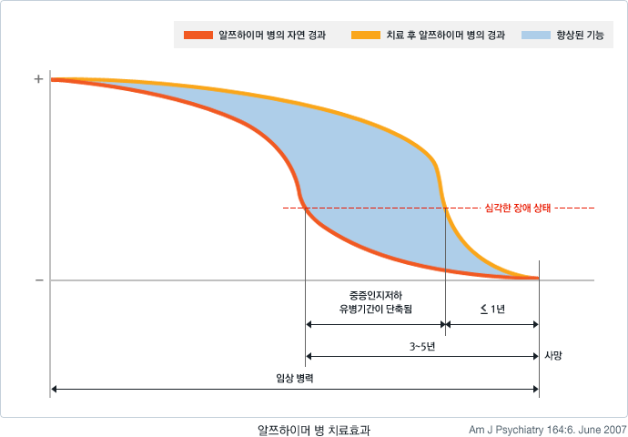

통합적 치료관리란
치매환자의 현재 기능을 극대화하고 최대한 오래 보존하며 장기간 치료관리를 행하기 위해 의료, 간호, 복지, 작업치료, 물리치료, 전문 요양 등 다양한 분야의 측면에서 실제 효과가 입증된 최적의 치료관리방법을 체계적으로 환자와 가족에게 제공하는 것을 말합니다.
필요성
대부분의 치매환자는 근원적인 치료방법이 없기 때문에 점진적으로 기능을 상실하며 생을 마감하지만 체계적인 치료관리를 통해 삶의 질을 향상시킬 수 있는 방법이 존재합니다. 치매 환자에 대한 최적의 치료관리를 위해서는 여러 전문분야에서 다양한 방법들이 활용되어야 합니다.
통합적 치료관리를 위해 필요한 사항들
- 정확한 진단: 치매, 어떻게 진단하나요?
- 치매에 대한 특히 노인의 진단명에 대한 철저한 이해: 치매, 어떤 병인가요?
- 장단기 치료관리 계획의 수립
- 약물치료에 대한 이해: 인지기능치료 약물, 정신행동증상 치료약물
- 비약물개입기법에 대한 이해 : 비약물적 개입기법
- 치매 노인과의 의사소통 전략: 의사소통기법
- 치매 노인의 부적절한 행동에 대한 대처 전략 : 이럴 땐 이렇게!
- 케어 제공자의 부담에 대한 이해와 경감 전략: 가족조호자 부담감 줄이기
- 지역사회 치매 서비스에 대한 정보 및 활용: 노인장기요양보험 재가급여
- 시설 특성 및 활용 전략: 노인장기요양보험 시설급여
* 본문에 관한 자세한 내용을 보시려면 자료 다운을 클릭해 주세요.
제목 : 치매의 통합적 치료관리 개념

인지기능 약물치료
- 현재 사용 중인 인지기능개선제(cognitive enhancer)는 알쯔하이머병에 대한 것입니다. 따라서 순수한 혈관성 치매, 기타 치매에 대한 약물 효과는 좀 더 많은 연구가 필요한 상황입니다.
- 알쯔하미어병 환자를 위한 대표적인 인지기능개선제로는 아세틸콜린분해효소억제제 (Acetylcholinesterase inhibitor, ACEI)와 NMDA 수용체 길항제(NMDA receptor antagonist)가 있습니다.
1) 아세틸콜린분해효소억제제 (Acetylcholinesterase inhibitor, ACEI)
정상인의 경우, 뇌의 신경세포에서 아세틸콜린이라는 신경전달물질이 적절히 분비되어 기억력이 유지되고, 학습이 가능합니다. 그러나 치매 환자는 뇌에서 아세틸콜린을 분비하는 신경세포가 파괴되면서 아세틸콜린의 분비가 줄어, 기억력과 같은 인지기능이 떨어지게 됩니다. 아세틸콜린분해효소억제제 계통의 약물들은 치매로 인하여 저하된 시냅스 간극(synaptic cleft)의 아세틸콜린 농도를 증가시켜 환자의 인지기능을 향상시킬 수 있습니다.
- 종류
전 세계적으로 널리 사용되는 알쯔하이머병의 치료제로는 Donepezil, Rivastigmine, Galantamine 등이 있습니다.
- 약물 효과
병의 진행을 막을 수는 없으나 그 경과를 약 6개월에서 2년 이상 늦출 수 있습니다. 약물 효과는 병의 초기와 중기에 큰 것으로 알려져 있습니다. 하지만 Donepezil은 말기 알쯔하이머병 환자에게도 효과가 있다고 인정됩니다.
- 약물 부작용
오심, 구토, 설사, 두통 등의 부작용이 흔하지만, 대개 일시적이고 가볍기 때문에 큰 문제가 되지 않습니다.
2) NMDA 수용체 길항제 (NMDA receptor antagonist)
글루타메이트(glutamate)라는 신경전달물질이 과도하게 활성화되면 학습 및 기억 능력이 저하되는 것으로 알려져 있습니다. 이 약물은 글루타메이트와 결합하는 NMDA 수용체를 억제함으로써 알쯔하이머병 환자의 학습 및 기억능력을 증진하고 병의 진행을 막을 수 있을 것으로 생각됩니다. 이런 종류의 약으로는 현재 Memantine(Ebixa)이 유럽과 미국 연구에서 중등도 및 중증 알쯔하이머병환자에게 효과가 있는 것으로 입증되었습니다.
3) 기타 보조약물
- 항산화제
산화과정에서 발생하는 독성 산소 라디칼이 알쯔하이머병의 발병 기전에 관여하는 것으 로 알려지고 있어 이를 억제할 수 있는 항산화제에 대한 연구가 많이 시행되었습니다. 항산화제에 속하는 비타민 E (고용량)와 Selegiline이 알쯔하이머병의 진행을 지연시키 는데 효과가 있다는 것이 대규모 임상연구를 통해 밝혀져 현재 이들 약물이 임상에서 사용되고 있으나 다소 논란이 있어 추가 연구가 필요합니다.
- 이 밖에도 뇌 대사기능개선제, 고지혈증 치료제, 소염제, 에스트로겐 등의 호르몬제제, 신경펩타이드 등 여러 가지 약제들이 일부 연구에서 치료효과가 있는 것으로 시사되기도 하였으나 부작용이 심하거나 일관된 치료 효과가 입증되지 못해 현재 임상에서는 별로 사용되고 있지 않습니다.
※ 여기서 언급하는 이름들은 약의 성분명이며 상품명이 아닙니다. 구체적인 상품명은 담당 의사 및 약사와 상의하세요.
치료 효과
알쯔하이머 병 환자는 자연 경과상 사망 전 마지막 3-5 년은 심각한 장애상태가 유지가 되는데, 약물 치료와 비 약물적 치료를 통해서 이런 심각한 장애가 지속되는 기간을 1년 이내로 줄일 수 있습니다. 이는 치매를 돌보는 보호자의 심리적, 경제적 부담을 상당히 덜어 줄 수 있을 뿐 아니라, 국가적으로도 치매환자를 위한 의료비, 조호비 등의 경제적인 부담을 크게 줄일 수 있습니다. 현재 치매의 진행을 완전히 차단해 줄 수 있는 약은 개발되지 않았으나 알쯔하이머 병의 원인이 되는 병적 단백질의 형성을 차단하거나 뇌에 침착되는 것을 막아주어 병의 진행을 근본적으로 차단하는 약물들이 개발되고 있고 멀지 않은 장래에 임상적으로 사용될 것으로 기대되고 있습니다.

* 본문에 관한 자세한 내용을 보시려면 자료 다운을 클릭해 주세요.
제목 : 인지기능 치료 약물
치매는 인지 장애와 함께 여러 가지 증상을 동반합니다. 어떤 환자들은 공격적 행동을 보이거나, 의심을 하는 편집적 행동, 초조해하며 안절부절못해 하는 등의 정신행동 증상을 보이거나, 무기력해하고 우울해 하는 등의 정동 장애를 동반할 수 있습니다. 이러한 정신행동증상이나 정동장애는 치매의 경과를 악화시키거나 보호자의 부담을 가중시키는 주요 원인이 됩니다. 따라서 치매의 치료에는 인지 기능의 저하뿐 아니라 이러한 정신행동증상과 정동장애에 대한 평가와 치료가 반드시 필요합니다. 매우 흔하고 가족들과 전문케어제공자를 가장 힘들게 하는 정신행동증상에 대한 약물치료는 많은 경우 증상을 효과적으로 줄일 수 있지만 모든 증상이 약물치료의 대상이 아니고 최적의 용량을 찾기 위한 과정이 있어야 하는 등 전문적인 영역이 있기 때문에 대략적인 내용들을 미리 파악해 두는 것은 매우 중요합니다.
약물치료의 원칙
약물을 사용할 증상을 확인해야 합니다.
어떤 증상을 목표로 약물치료를 시행할 지에 대한 결정이 필요합니다. 증상은 한 가지만 나타나는 것이 아니고 여러 가지 증상이 복합적으로 나타나는 경우가 많기 때문에 좀 더 전문적인 고려가 필요합니다. 약물이 목표증상에 어느 정도 효과가 있을지에 대해 고려해야 합니다. 대체로 정신행동증상에 대한 약물치료의 효과는 좋은 편이지만 모든 증상에 대해 약물치료가 같은 효과를 가지는 것은 아닙니다. 예를 들어 환청이나 망상은 항정신병 약물에 대한 반응이 좋지만 아무런 원인이 없는 부산함 등의 증상에 대한 항정신병 약물의 반응은 그리 좋은 편은 아닙니다.
구체적으로 어떤 약물을 어느 정도 용량으로 사용할지를 결정해야 합니다.
정신행동증상을 조절하기 위해 사용하는 여러 가지 약물 중 어떤 약물을 선택할지는 환자의 나이, 신체적 건강상태, 증상의 심각성을 고려한 전문가의 결정을 존중합니다.
약물 사용방법을 결정합니다.
적은 용량으로 시작하고 효과가 나올 때까지 서서히 증량합니다. 적은 용량에서부터 시작하고 서서히 용량을 늘리는 것은 약물의 부작용이 적게 나타나도록 하면서 개인별로 가장 효과적인 용량을 찾기 위한 것입니다. 노인은 부작용에 민감하기 때문에 특별한 주의가 필요합니다. 정신행동증상은 개인별로 차이가 크고 약물에 대한 반응도 개인차가 있습니다. 따라서 같은 용량이라도 개인별로 효과가 다르게 나타날 수 있습니다.
치료 약물의 종류
정신행동증상의 치료에는 항정신병 약물, 항우울제, 항불안제, 항경련제 등을 주로 사용합니다. 한 가지 약물이 한 가지 증상에만 효과가 있는 것이 아닙니다. 예를 들어 공격성의 경우 항경련제, 항정신병, 항불안제 모두 효과가 있습니다. 따라서 환자가 공격성을 보이는 경우 얼마나 심한 공격성이냐, 만성적이냐 혹은 간헐적이냐, 특정약물을 사용할 수 없는 신체질환을 가지고 있느냐 등 여러가지 상황을 고려하여 약물을 선정합니다. 경우에 따라서는 두 세가지 약물을 병합하여 사용하기도 합니다.
항정신병 약물
- 항정신병 약물은 망상, 환각 등 정신병적 증상을 보이는 경우, 심각한 초조와 공격성을 보이는 경우에 주로 사용합니다.
- 항정신병 약물에는 과거부터 널리 사용되었던 약물(전형 항정신병약물)과 비교적 최근에 개발된 약물(비전형 항정신병약물)이 있습니다. 정형 항정신병 약물로는 할로페리돌(haloperidol), 클로로프로마진(chlorpromazine) 등이 대표적입니다. 리스페리돈(risperidone), 올란자핀(olanzapine), 퀘티아핀(Quetiapine), 아리피프라졸(aripiprazole), 클로자핀(clozapine) 을 비롯한 비정형약물은 정형약물에 비해 효과는 비슷하지만 부작용이 적어 최근 널리 사용됩니다.
- 항정신병약물은 몸이 뻣뻣해지고 얼굴표정이 없어지는 등의 추체외로증상, 안절부절못함, 졸림, 변비 등 부작용을 유발할 수 있으며 장기간 복용할 때에는 근육이 통제가 되지 않고 마음대로 움직이는 지연성 운동장애가 나타날 수 있습니다.
항우울제
- 항우울제는 우울증상, 초조, 불안, 불면에 사용합니다.
- 과거 우울증상에 널리 사용되던 삼환계 항우울제(tricylic acid ,TCA)에 비해 심장 독성, 졸음, 어지러움, 침마름, 변비 등 부작용이 적은 선택적 세로토닌 재흡억제제(selective serotonin reuptake inhibitor)가 주로 사용되고 있으며 그 외에 두가지 이상의 기전을 통해 우울증을 조절하는 약물들이 널리 사용되고 있습니다.
항불안제
- 항불안제는 불안, 수면장애, 공격성을 조절하기 위해 사용할 수 있습니다.
- 항불안 약물은 벤조다이아제핀(benzodiazepine)계 약물들이 대표적입니다. 벤조다이아제핀계 약물은 의존성이 생길 우려가 크기 때문에 증상 조절을 일시적으로 사용하며 장기간 유지가 필요한 경우는 항정신병 약물 등 다른 약물로 교체하는 것이 일반적입니다.
기타
초조와 공격성이 매우 심한 경우 또는 드물지만 기분이 고양된 상태가 지속되는 조증 상태(manic state)에는 항경련 약물(anticonvulsant)을 사용할 수 있습니다. 또 수면문제를 일시적으로 해결하기 위해서는 수면제를 사용할 수 있습니다.
표1 . 정신행동증상 치료 약물
| 약물 종류 | 증상 |
|---|---|
| 항경련약물 | 초조, 공격성 |
| 항우울약물 | 우울,불안,초조,수면장애 |
| 항정신병약물 | 망상,환각,초조,공격성 |
| 항불안약물 | 수면장애,불안,공격성 |
약물을 사용하지 않고 치매 증상을 완화하고 삶의 질을 향상시키기 위해 사용되는 모든 방법을 말합니다.
비약물적 개입기법의 필요성
- 현재 치매 약물은 증상완화 위주입니다.
- 약물은 원하지 않는 부작용이 발생할 수도 있습니다.
- 지나친 약물 의존으로 환자와 가족은 수동적인 태도에 익숙해지고 무력감과 좌절감을 느낄 수 있습니다.
비약물적 개입기법의 종류
치매 환자를 위한 개입
- 기억재활
- 현실감각훈련(Reality orientation)
- 회상요법(Reminiscence therapy)
- 행동적 개입
- 인정요법(Validation therapy)
- 스노즐렌(Snoezelen)
- 음악요법
- 미술요법
- 원예치료
- 향기요법(Aromatherapy)
- 행동수정
- 환경조정
- 광 치료(Light therapy)
치매 환자 케어제공자를 위한 개입
- 치매 가족교육
- 치매 자조모임
* 본문에 관한 자세한 내용을 보시려면 자료 다운을 클릭해 주세요.
제목 : 비약물적 개입기법 개관 /저자: 단국대학교 정신과 이석범교수
치매환자에 대한 인지재활의 개념
기억감퇴는 초기 알쯔하이머형 치매와 초기 혈관성 치매 노인의 대부분이 경험하는 주된 증상입니다. 기억 감퇴를 경험하는 치매노인은 자신감 상실로 불안, 우울, 위축 등의 증상이 나타나고 이로 인해 기억 감퇴가 더욱 심해지거나 심해져 보이는 악순환을 겪게 됩니다. 기억감퇴는 치매노인 뿐만 아니라 노인을 돌보는 가족에게도 일상에서 반복되는 긴장과 좌절을 초래하게 합니다. 따라서 초기 치매노인은 기억감퇴를 회복 또는 보완하도록 개인인지재활, 집단인지재활, 도구를 사용한 컴퓨터 인지재활 등이 필요합니다. 중기 및 말기의 치매노인은 신체 및 인지기능을 고려한 환경수정이 필요합니다. 이러한 치료는 치매노인 뿐만 아니라 가족의 삶의 질 향상을 위해 꼭 필요합니다.
인지재활의 종류
1) 개인 인지재활
치매노인 개인의 인지기능에 적합한 인지훈련을 시행합니다. 생활에 필요한 것을 기억하고 학습할 수 있도록 다양한 방법을 적용하여서 훈련합니다.
개인인지재활에서 사용하는 방법들
- 시간차 회상 훈련
- 오차 배제 학습
- 점진적 소실 기법
- 컴퓨터 인지재활
구체적인 방법은 PDF자료를 참고하세요.
가정방문 작업치료
가정방문 작업치료란 시설 및 기관으로 치매노인이 오는 것이 아니라 작업치료사가 직접 방문하여 치료하는 방법입니다. 치매노인은 점차 인지기능 저하, 일상생활활동의 어려움, 그리고 다양한 정신행동 등으로 인해 독립적인 일상생활이 어려워질 뿐만 아니라 여러 가지 안전상의 위험에도 노출되기 쉽습니다. 치매노인은 가정과 같이 익숙한 곳에서 자기다운 생활을 할 때 정서적으로 가장 안정감을 느끼며, 인지적 혼란도 최소화할 수 있습니다. 치매노인에게 일상적인 기능을 유지, 촉진하고 환경에 적응할 수 있는 기회를 늘려줄 뿐만 아니라 보호자로 하여금 치매노인의 행동변화에 효과적으로 대응할 수 있는 기술을 향상 시킬 수 있습니다.
집단인지재활
치매노인의 경우 집단작업치료 프로그램을 통하여 집단에서 다른 사람과의 관계를 형성하고 시작할 수 있도록 도울 수 있습니다. 집단인지재활 프로그램에서는 타인과 접촉하여 교류를 촉진하려는 작용이 이루어집니다. 공통된 즐거움이나 목적을 가짐으로써 집단 참가자 간에 신뢰감과 소속감이 생기며, 그 속에서 참가자는 안심하고 공간적, 시간적으로 공유할 수 있습니다.
집단인지재활에서 사용하는 방법들
- 신체 이완 훈련
- 지남력 훈련
- 기억력 훈련
- 목적 있는 활동
* 본문에 관한 자세한 내용을 보시려면 자료 다운을 클릭해 주세요.
제목 : 인지재활의 종류와 방법 /저자: 동남보건대학 작업치료학과 정원미교수
치매 환자들은 정상 노인들에게도 흔한 신체 질환뿐만 아니라 만성적인 뇌 질환과 정신 기능 저하로 인한 문제들까지 함께 보이게 된다. 실재 치매 그 자체가 직접적인 사인이 되는 경우는 드물며, 오히려 흡인성 폐렴, 탈수, 영양 실조, 욕창이나 요도 감염으로 인한 폐혈증 등의 합병증이나 심혈관 질환 또는 암과 같은 노년에 흔한 병발 질환 때문에 사망하게 되는 경우가 대부분이다.
노인에 흔한 대표적인 신체 질환으로 관절염, 고혈압, 청력 장애, 허혈성 심장병, 당뇨, 백내장, 중풍, 악성 종양, 하지 골절 등을 들 수 있는데, 65세 이상 노인의 경우, 남자는 평균5.0가지, 여자는 평균 5.4가지의 병을 동시에 앓고 있다고 한다. 그런데 한가지 흥미로운 사실은 치매 환자들이 정상 노인에 비해 평균 여명이 짧은데도 함께 앓고 있는 다른 질병의 가지수는 오히려 정상 노인보다 적다는 사실이다. (남자는 평균 2.9가지, 여자는 평균 2.8가지) 이처럼 알쯔하이머형 치매 환자들이 정상인보다 건강하게 나타나는 이유로는, 다른 심각한 질병은 가진 이들은 치매가 될 때까지 살지 못하므로 연령이라는 요소에 의해 걸러진(age-censoring) 선택 오류가 개입되었을 가능성과 다른 심각한 질병이 있을 경우에는 치매의 진단이 중요치 않게 여겨져 진단될 확률이 낮아질 가능성 등을 생각할 수 있다.
치매 환자들이 평균 3가지의 다른 질병을 동시에 앓고 있고, 이 질환들 중 상당수가 치매 증상을 악화시키기 때문에, 치매에 동반된 신체 질환을 조기에 발견하여 적극적으로 치료하는데 주의를 아끼지 말아야 한다.
섬망
병원에 입원한 치매 환자들의 경우, 25%~40% 정도가 섬망을 동반하지만 조기에 발견되지 않아 방치되는 경우가 많다. 치매 환자가 갑자기 행동 변화나 불면증, 환시, 주의력 장애 등을 보일경우, 일단 섬망을 의심해보는 것이 좋다. 섬망은 조기에 발견해서 원인을 제거하는 것이 가장 좋은 치료법이다.
낙상 및 골절
판단력 감소(예:능력에 비해 너무 빨리 걷거나 혹은 미끄러운 곳을 피하지 않고 걷는 등), 추체외 증상, 시야장애, 약물의 부작용 등으로 인한 낙상이 많으며, 전반적인 골절 위험성은 정상인의 3.6배 골반 골절은 정상인의 7배에 달한다. 낙상을 유발하는 원인을 조기에 제거함으로써 낙상과 이로 인한 골절을 예방할 수 있다.
요실금
11%에서 90%까지 매우 다양하게 보고되기는 하였지만, 어쨌든 정상인보다는 많으며, 남자에게 좀 더 흔하다. 원인은 대부분 갑자기 소변이 심하게 마려워 지는 것을 참지 못하는 'urge incontinence'이다. 요양기관에 수용되어 있거나 재활 중인 환자들에서 가장 흔한 형태로, 다른 형태에 비해 소변량이 많고, 밤에 문제를 일으키는 경우도 더 많다. 지남력 장애 등의 인지기능 감퇴와 요감(bladder sensation) 감소가 동반되어 나타나는 것으로 보인다. 이외에 요실금의 일시적인 원인이 있다면 찾아내서 해결해줘야 하는데, 섬망, 거동 장애, 감염, 변비, 약물 등이 가장 흔한 원인이다.
변실금
17% 정도로 보고되고 있으며, 변비로 대변이 차있거나, 설사 혹은 직장이나 항문에 병변이 있을 경우에 주로 나타나며, 원인에 따른 적절한 치료로 조절될 수 있다.
영양실조
치매 말기에는 흔히 체중감소가 동반되는데, 정상인에 비해 체중이 평균 21%-50% 감소되었다는 보고가 있다. 원인은 먹는데 관심이 없거나, 먹는데 도움이 필요한 경우, 자꾸 걸어 다니는 등의 행동 증상으로 인해 요구되는 열량이 증가되어 있는 경우 등이다. 성공적인 식이 비결이란 격려와 인내이며, 아울러 익숙한 음식을 매일 일정한 시간에 주는 것이 도움이 된다. 만약 안절부절하여 식사가 어려운 경우라면 소량으로 자주 주는 것이 좋고, 치즈나 크래커, 혹은 샌드위치와 같이 들고 다니며 먹을 수 있는 음식을 주는 방법도 있다. 또 구강이나 치아 질환이 원인이 되는 경우도 적지 않은데, 정기적인 검진을 통해 조기에 치료하도록 해야 한다.
간질
말기 치매 환자들의 경우, 이전에는 없는 간질 발작을 보이는 경우가 적지 않다. 우선 치매의 원인이 대사성 장애에 의한 것인지, 아니면 뇌 병변의 진행에 의한 것이지를 감별해야 한다. 치료는 진정 효과가 적은 항전간제를 투여하여 간질 발작을 억제하고, 대사성 장애가 원인일 경우에는 이를 교정해야 한다.
약물 부작용
치매 환자들은 치매와 다른 신체 질환의 치료를 위해 동시에 여러 가지 약물을 함께 복용하게 되는 경우가 적지 않다. 특히 여러 전문과에서 나름대로 처방을 하다보면 약제의 중복 처방이나 약제 간 상호 작용 때문에 부작용이 더욱 심해지기도 한다. 치매 환자들이 흔히 경험하는 약물 부작용은 인지기능 감퇴, 추체외로 증상, 기립성 저혈압, 좌불안석, 변비 등이 있다.
사망
정상인에 비해1.3-3.5배. 미국의 경우 성인 사망 원인 중 4위 가장 흔한 것이 감염질환이다. 노화로 인한 저항력 저하 및 부적절한 영양관리와 생활관리가 원인이 되어 폐렴이나 방광염과 같은 질환이 자주 발생하게 된다. 그 외 치매로 인하여 노인성 질환인 당뇨나 고혈압을 제대로 치료받지 못하게 됨에 따라 합병증 즉 심장질환이나 신장질환 혹은 혈관성 질환이 발생하거나 악화되어 사망할 수도 있다. 영양부족으로 인하여 사망하거나 욕창이 진행되어 사망하기도 한다. 진행되면서 현실 판단력이 떨어지기 때문에 사고로 인하여 사망하게 되는 경우도 간혹 발생한다.
* 본문에 관한 자세한 내용을 보시려면 자료 다운을 클릭해 주세요.
제목 : 치매환자에게 흔한 합병증들 /저자: 대림성모병원 정신과 박신영과장